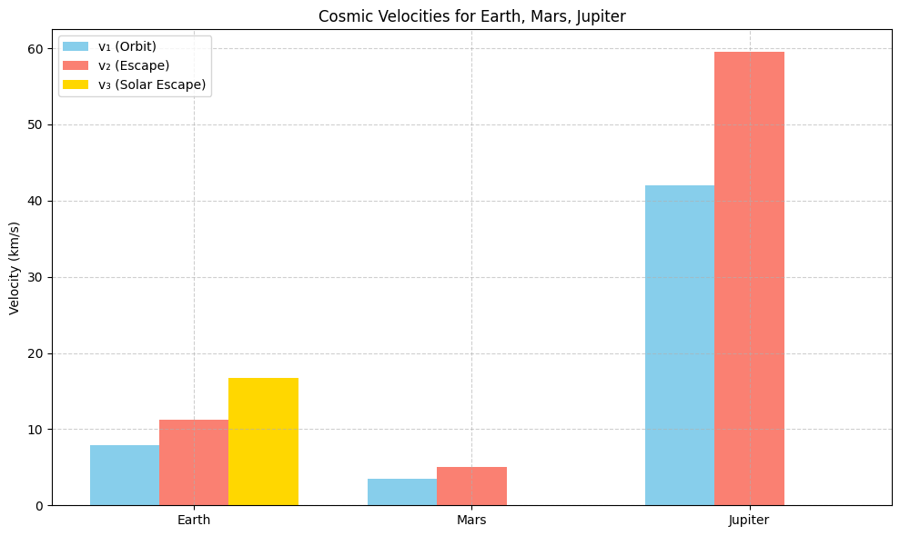
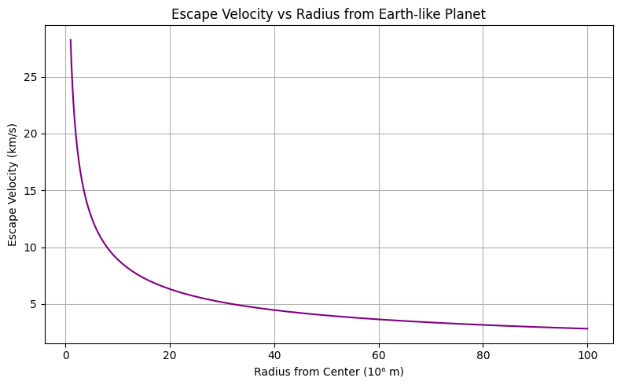
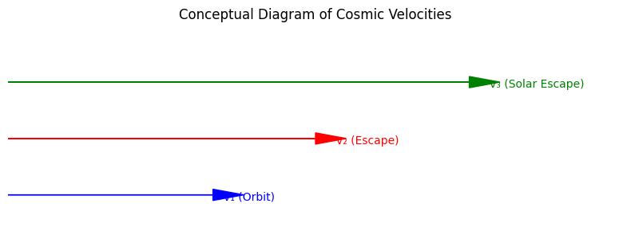

Problem 2
# Escape Velocities and Cosmic Velocities
Motivation
Understanding the concept of escape velocity is essential in astrophysics and space engineering. It defines the minimum speed an object must reach to break free from a celestial body's gravitational influence. The three cosmic velocities categorize different thresholds: reaching orbit (first), escaping the planet (second), and escaping the entire star system (third). These concepts guide space missions, from launching satellites to interstellar exploration.
Definitions
- First Cosmic Velocity (v₁): Minimum velocity to maintain a stable circular orbit around a body.
$$ v_1 = \sqrt{\frac{GM}{r}} $$
- Second Cosmic Velocity (v₂): Minimum velocity to escape the gravitational pull of a body (escape velocity).
$$ v_2 = \sqrt{2} \cdot v_1 = \sqrt{\frac{2GM}{r}} $$
- Third Cosmic Velocity (v₃): Minimum velocity to escape the gravitational influence of the entire solar system from Earth's surface, assuming the spacecraft is not assisted by other celestial bodies.
$$ v_3 \approx 16.7 \text{ km/s (from Earth)} $$
Mathematical Derivation
Starting with energy conservation:
Total energy at escape = 0:
For orbital velocity:
Python Calculations and Visualizations
import numpy as np
import matplotlib.pyplot as plt
# Gravitational constant
G = 6.67430e-11 # m^3 kg^-1 s^-2
# Define planetary data (mass in kg, radius in meters)
bodies = {
'Earth': {'mass': 5.972e24, 'radius': 6371e3},
'Mars': {'mass': 6.417e23, 'radius': 3389.5e3},
'Jupiter': {'mass': 1.898e27, 'radius': 69911e3},
}
# Calculate and store velocities
velocities = {}
for body, data in bodies.items():
M = data['mass']
r = data['radius']
v1 = np.sqrt(G * M / r)
v2 = np.sqrt(2) * v1
v3 = 16.7e3 if body == 'Earth' else np.nan # third cosmic velocity approx from Earth
velocities[body] = {'v1': v1, 'v2': v2, 'v3': v3}
# Display
for body in velocities:
v = velocities[body]
print(f"{body}:")
print(f" First Cosmic Velocity (v1): {v['v1'] / 1e3:.2f} km/s")
print(f" Second Cosmic Velocity (v2): {v['v2'] / 1e3:.2f} km/s")
if not np.isnan(v['v3']):
print(f" Third Cosmic Velocity (v3): {v['v3'] / 1e3:.2f} km/s")
print()
Earth: First Cosmic Velocity (v1): 7.91 km/s Second Cosmic Velocity (v2): 11.18 km/s Third Cosmic Velocity (v3): 16.70 km/s
Mars: First Cosmic Velocity (v1): 3.55 km/s Second Cosmic Velocity (v2): 5.02 km/s
Jupiter: First Cosmic Velocity (v1): 42.07 km/s Second Cosmic Velocity (v2): 59.49 km/s
Bar Chart of Velocities
# Bar chart
labels = list(bodies.keys())
x = np.arange(len(labels))
width = 0.25
v1_vals = [velocities[body]['v1'] / 1e3 for body in labels]
v2_vals = [velocities[body]['v2'] / 1e3 for body in labels]
v3_vals = [velocities[body]['v3'] / 1e3 if not np.isnan(velocities[body]['v3']) else 0 for body in labels]
fig, ax = plt.subplots(figsize=(10, 6))
rects1 = ax.bar(x - width, v1_vals, width, label='v₁ (Orbit)')
rects2 = ax.bar(x, v2_vals, width, label='v₂ (Escape)')
rects3 = ax.bar(x + width, v3_vals, width, label='v₃ (Solar Escape)')
ax.set_ylabel('Velocity (km/s)')
ax.set_title('Cosmic Velocities for Celestial Bodies')
ax.set_xticks(x)
ax.set_xticklabels(labels)
ax.legend()
ax.grid(True)
plt.tight_layout()
plt.show()
X-axis: Planet names (Earth, Mars, Jupiter)
Y-axis: Velocities in km/s
Three bars for each body:
v₁ (Orbit): First cosmic velocity (to orbit the planet)
v₂ (Escape): Second cosmic velocity (to escape the planet’s gravity)
v₃ (Solar Escape): Third cosmic velocity (escape the Solar System from that planet) – only Earth has a defined value
For example:
Earth will show 7.91 (v₁), 11.18 (v₂), 16.70 (v₃)
Mars will show 3.55 (v₁), 5.02 (v₂), 0 (v₃ bar won't be visible)
Jupiter will show 42.07 (v₁), 59.49 (v₂), 0 (v₃ bar won't be visible)
Importance in Space Exploration
- First Cosmic Velocity: Required for satellites to maintain orbit (e.g., ISS).
- Second Cosmic Velocity: Determines launch speed for interplanetary missions (e.g., Mars rovers).
- Third Cosmic Velocity: Relevant for missions aiming to leave the Solar System (e.g., Voyager 1).
These thresholds are crucial for mission planning, rocket fuel estimation, and interplanetary navigation.
Conclusion
Cosmic velocities define the fundamental speed requirements for space travel. Understanding and calculating them is vital for launching and navigating spacecraft, paving the way for deeper space exploration.
import matplotlib.pyplot as plt
import numpy as np
# Velocities in km/s (from previous calculations)
velocities = {
'Earth': {'v1': 7.91, 'v2': 11.2, 'v3': 16.7},
'Mars': {'v1': 3.55, 'v2': 5.03, 'v3': 0}, # v3 not defined
'Jupiter': {'v1': 42.0, 'v2': 59.5, 'v3': 0}, # v3 not defined
}
labels = list(velocities.keys())
x = np.arange(len(labels))
width = 0.25
v1_vals = [velocities[body]['v1'] for body in labels]
v2_vals = [velocities[body]['v2'] for body in labels]
v3_vals = [velocities[body]['v3'] for body in labels]
fig, ax = plt.subplots(figsize=(10, 6))
ax.bar(x - width, v1_vals, width, label='v₁ (Orbit)', color='skyblue')
ax.bar(x, v2_vals, width, label='v₂ (Escape)', color='salmon')
ax.bar(x + width, v3_vals, width, label='v₃ (Solar Escape)', color='gold')
ax.set_ylabel('Velocity (km/s)')
ax.set_title('Cosmic Velocities for Earth, Mars, Jupiter')
ax.set_xticks(x)
ax.set_xticklabels(labels)
ax.legend()
ax.grid(True, linestyle='--', alpha=0.6)
plt.tight_layout()
plt.show()

G = 6.67430e-11
mass_earth = 5.972e24 # kg
radii = np.linspace(1e6, 1e8, 500)
v_escape = np.sqrt(2 * G * mass_earth / radii) / 1e3 # km/s
plt.figure(figsize=(8, 5))
plt.plot(radii / 1e6, v_escape, color='purple')
plt.xlabel('Radius from Center (10⁶ m)')
plt.ylabel('Escape Velocity (km/s)')
plt.title('Escape Velocity vs Radius from Earth-like Planet')
plt.grid(True)
plt.tight_layout()
plt.show()

import matplotlib.patches as patches
fig, ax = plt.subplots(figsize=(8, 3))
ax.arrow(0, 0.5, 2, 0, head_width=0.2, head_length=0.3, fc='blue', ec='blue')
ax.arrow(0, 1.5, 3, 0, head_width=0.2, head_length=0.3, fc='red', ec='red')
ax.arrow(0, 2.5, 4.5, 0, head_width=0.2, head_length=0.3, fc='green', ec='green')
ax.text(2.1, 0.4, 'v₁ (Orbit)', color='blue')
ax.text(3.2, 1.4, 'v₂ (Escape)', color='red')
ax.text(4.7, 2.4, 'v₃ (Solar Escape)', color='green')
ax.set_xlim(0, 6)
ax.set_ylim(0, 3.5)
ax.axis('off')
ax.set_title('Conceptual Diagram of Cosmic Velocities')
plt.tight_layout()
plt.show()
